W5 <<
Previous Next >> Project 2
Project 1
onshape是一套線上3D繪圖軟體，因此不須下載
繪圖過程(PPT)
零組件(stl下載)
平台
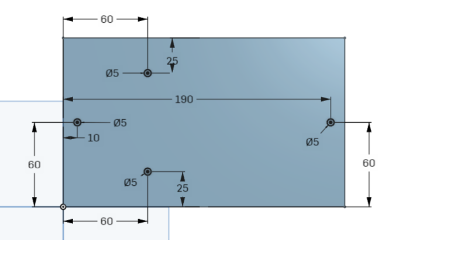
連接平台和板子的桿
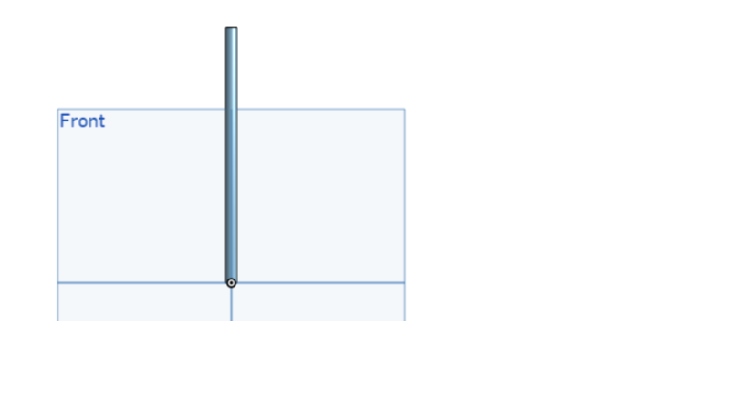
平台
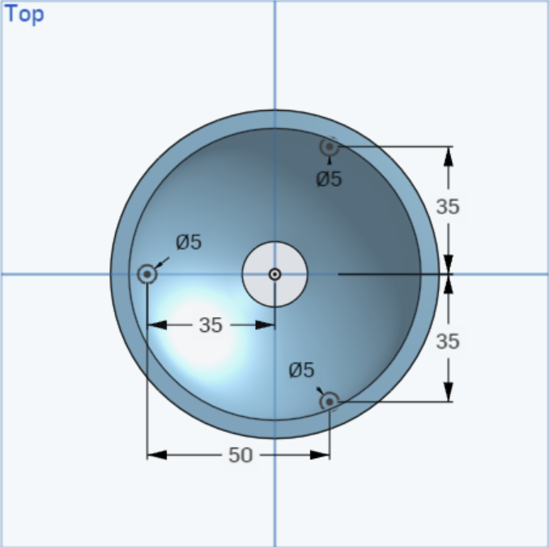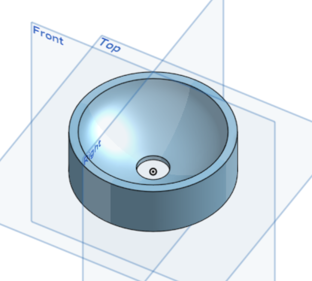
軌道(利用掃掠功能)
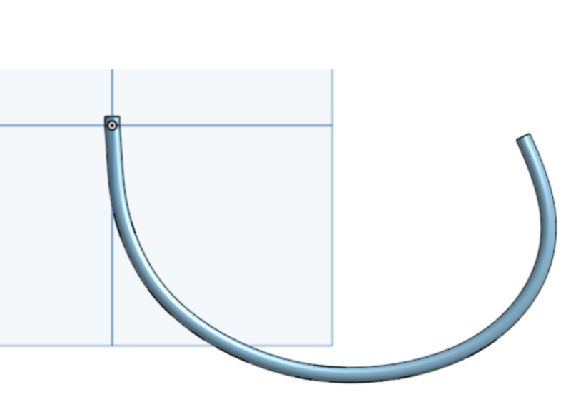
球
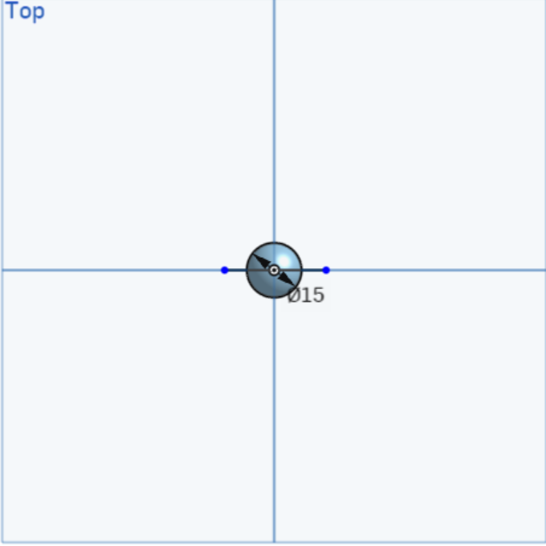
組裝後
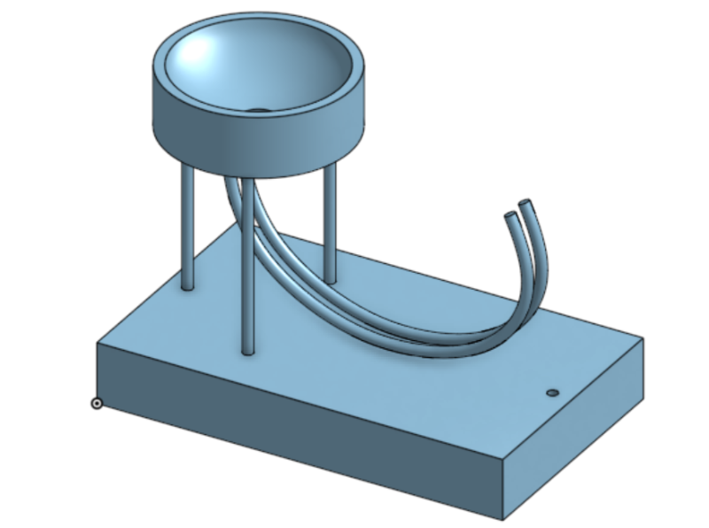
轉入coppeliasim加入ray type， 以 IPv6 ZMQ remote API Python 程式, 配合感測器作動對鋼球施力
# 以下的 zmq 程式庫已經過修改, 可以在 IPv4 與 IPv6 環境下使用
# 針對 CoppeliaSim 的 zmq 延伸程式, Python 需要安裝 cbor 與 pyzmq 等兩個模組
# pip install cbor pyzmq
from zmqRemoteApi_IPv6 import RemoteAPIClient
# 由於在 zmq 程式執行時, 希望讓使用者可以透過鍵盤 (或其他電子電機訊號) 指令控制遠端的機電模擬場景
# Python 程式環境還需要安裝 keyboard 模組, pip install keyboard
import keyboard
# 利用以下程式碼連接 CoppeliaSim remote API server
#第一個輸入變數若為 localhost 則只能控制與程式同在的場景
# 但若第一輸入變數為可連外的 IPv4 或 IPv6 address, 則可用來控制遠端電腦上的模擬場景
# 23000 為 CoppeliaSim 使用 ZMQ remote API 連線控制時內定的網路埠號
# client 與 server 的防火牆或代理主機必須讓此埠號的封包 (socket) 通過
client = RemoteAPIClient('localhost', 23000)
# 利用 getObject 取得場景中的 "sim" 物件參考對應值
sim = client.getObject('sim')
# 利用 sim 物件的 startSimulation() 方法啟動場景模擬
sim.startSimulation()
# 利用 getObject 取得 'marble' and 'sensor' 物件的參考對應值
marble = sim.getObject('./marble')
sensor = sim.getObject('./sensor')
# 透過變數屬性設定方法將 marble 設為 non-static, 意即具有 dynamic 特性
sim.setObjectInt32Param(marble, sim.shapeintparam_static, 0)
# 主模擬程序
while True:
if keyboard.is_pressed('q'):
# 模擬執行期間, 將滑鼠停在場景, 鍵盤按下 q 可以終止模擬
break
r, dist, pt, obj, normal = sim.handleProximitySensor(sensor)
res, dist2, point, obj2, n = sim.readProximitySensor(sensor)
# Get the current position of the marble
current_position1 = sim.getObjectPosition(marble, -1)
current_position2 = sim.getObjectPosition(marble, -1)
# 當鋼球碰觸感測器時
if res > 0:
if current_position1[0] < current_position2[0]:
# 對鋼球質心施以一個向量力
sim.addForceAndTorque(marble, [385, 0,-50], [0, 0, 0])
# Stop the simulation
sim.stopSimulation()
把球的名稱改成"marble"
雷射感測器的名稱改成"sensor"
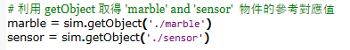
調整施力
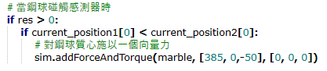
啟動感測器
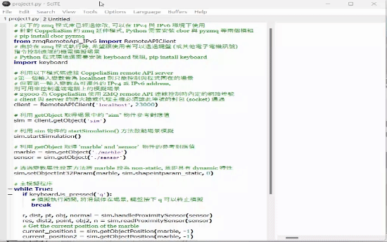
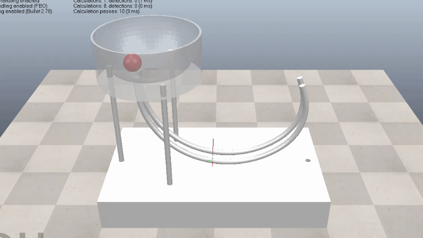
ttt檔(下載)
W5 <<
Previous Next >> Project 2